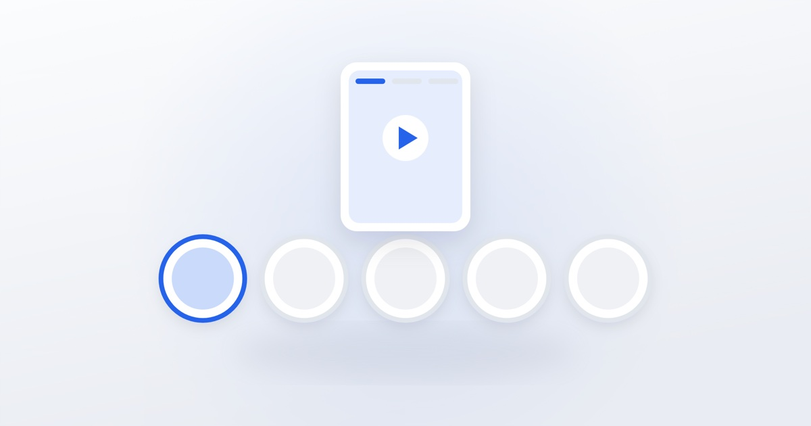

Сторис для бизнеса: что публиковать каждый день

Истории смотрят те, кто уже подписан, — это самая тёплая часть аудитории. Именно оттуда чаще всего приходят обращения. При этом большинство бизнесов либо не публикует их вовсе, либо выкладывает репосты акций.
Зачем нужны истории
- Держат вас в поле зрения между постами.
- Позволяют показать процесс и людей — то, что не помещается в ленту.
- Дают самый простой путь к диалогу: ответ на историю приходит в личные сообщения.
- Работают как быстрый тест идей через опросы.
Двенадцать форматов
- Утро рабочего дня — что сегодня в планах.
- Процесс — как делается работа, без монтажа.
- Результат — до и после.
- Вопрос клиента — скриншот и развёрнутый ответ.
- Опрос — два варианта, любой может выбрать в один тап.
- Разбор ошибки — что часто делают не так.
- Отзыв — скриншот сообщения с разрешения клиента.
- Закулисье — что происходит, когда никто не видит.
- Мнение — короткая позиция по спорному вопросу ниши.
- Анонс — что выйдет в ленте и зачем это смотреть.
- Личное — уместное в меру, показывает живого человека.
- Предложение — прямая продажа с понятными условиями.
Продающая история — примерно каждая пятая. Если продавать в каждой, досматриваемость падает и людей теряют.
Схема на неделю
Простой каркас, который не требует придумывать заново каждый день:
- понедельник — планы недели и анонс;
- вторник — процесс работы;
- среда — ответ на вопрос клиента;
- четверг — кейс или результат;
- пятница — опрос или обсуждение;
- суббота — закулисье, живое;
- воскресенье — предложение на следующую неделю.
Как снимать быстро
Снимайте материал в течение дня по ходу работы, а публикуйте порциями. Один рабочий день даёт материала на два-три дня историй. Не пытайтесь сделать каждую историю идеальной: здесь живость важнее качества картинки.
Что смотреть в статистике
- Досматриваемость цепочки — сколько людей дошло до последней истории. Если резко падает на третьей, значит, там скучно.
- Ответы и реакции — где люди начинают писать.
- Переходы по ссылкам.
- Выходы — на каких историях закрывают.
Ошибки
- Цепочка из 15 историй подряд — досмотрит меньше половины.
- Мелкий текст, который не читается на телефоне.
- Только репосты чужого контента.
- Публикация раз в две недели: аудитория отвыкает.
- Ни одной истории с призывом — люди не догадаются написать сами.
В рамках ведения мы берём истории на себя: сценарии, оформление, регулярность. Напишите, если аккаунт живёт только лентой.